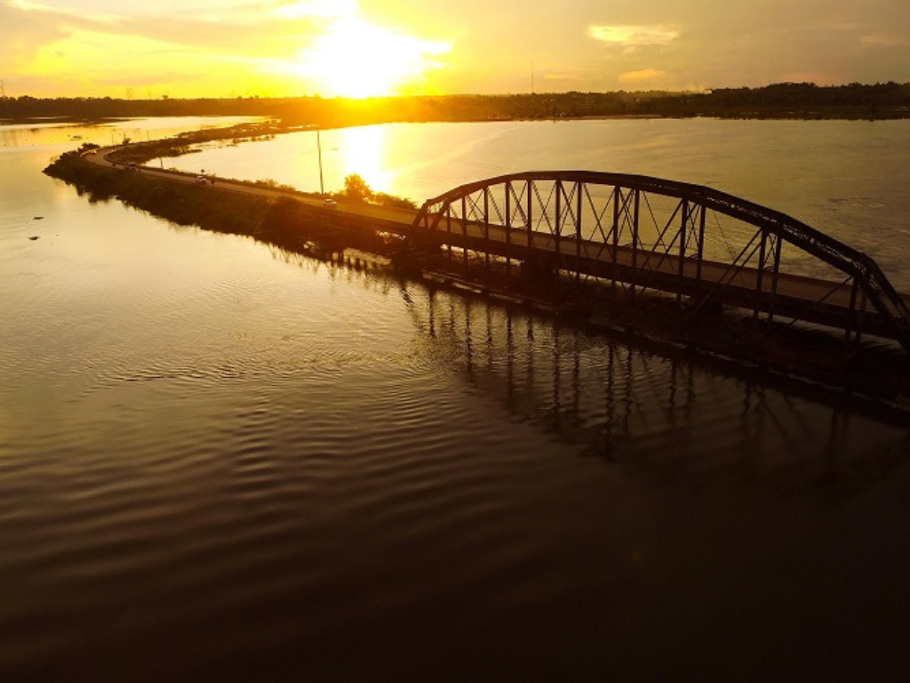

O estado de Rondônia está localizado na Região Norte do Brasil e possui grande importância econômica e ambiental devido à presença da Floresta Amazônica em seu território. O estado foi formado a partir de intensos movimentos migratórios, principalmente de pessoas vindas das regiões Sul e Sudeste do país, o que contribuiu para sua diversidade cultural. Sua capital, Porto Velho, é um importante centro urbano e histórico da região, marcado pela construção da Estrada de Ferro Madeira-Mamoré. Rondônia também se destaca pela produção agropecuária, pela geração de energia hidrelétrica e pela riqueza natural, com rios, reservas ambientais e comunidades tradicionais que fazem parte da identidade amazônica.
